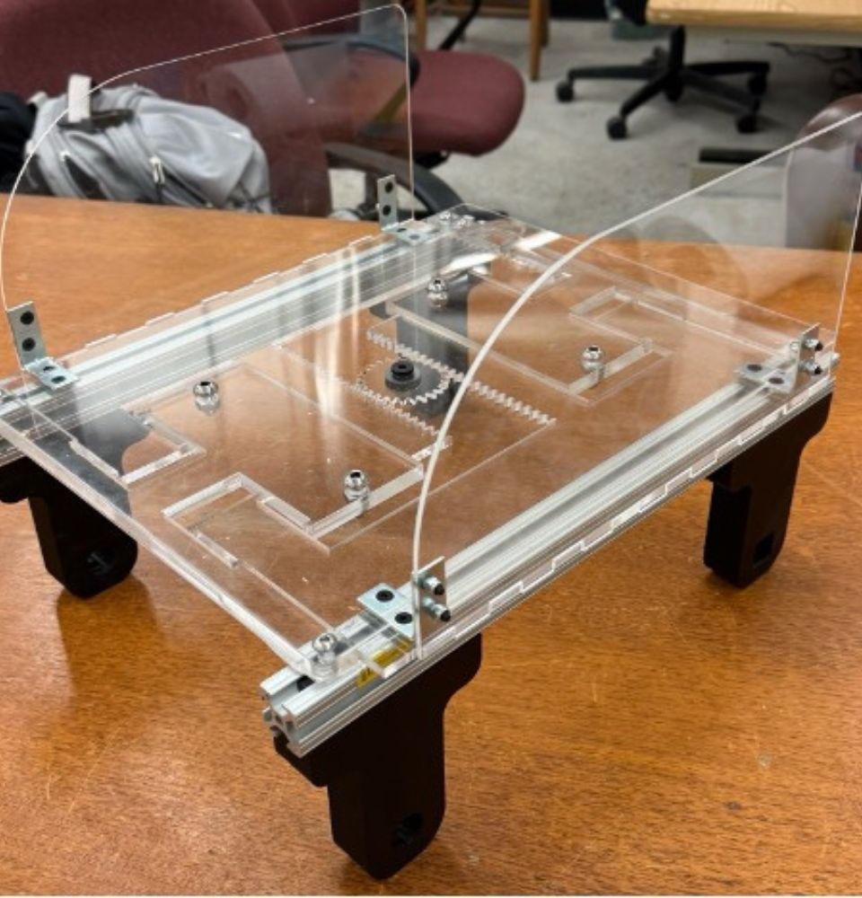
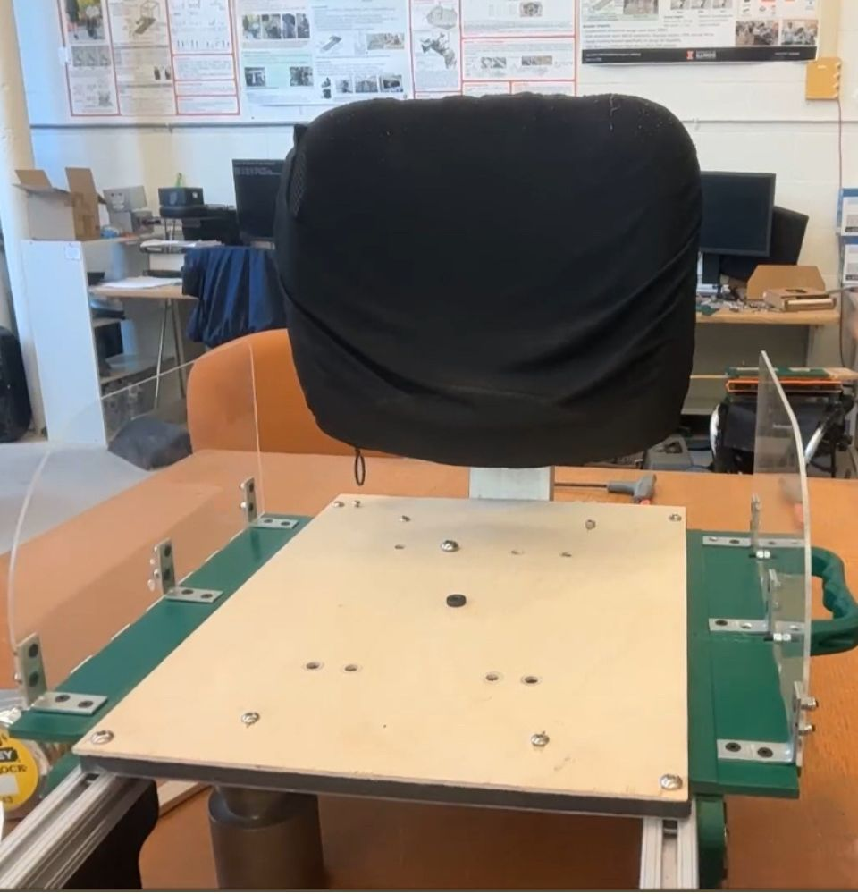
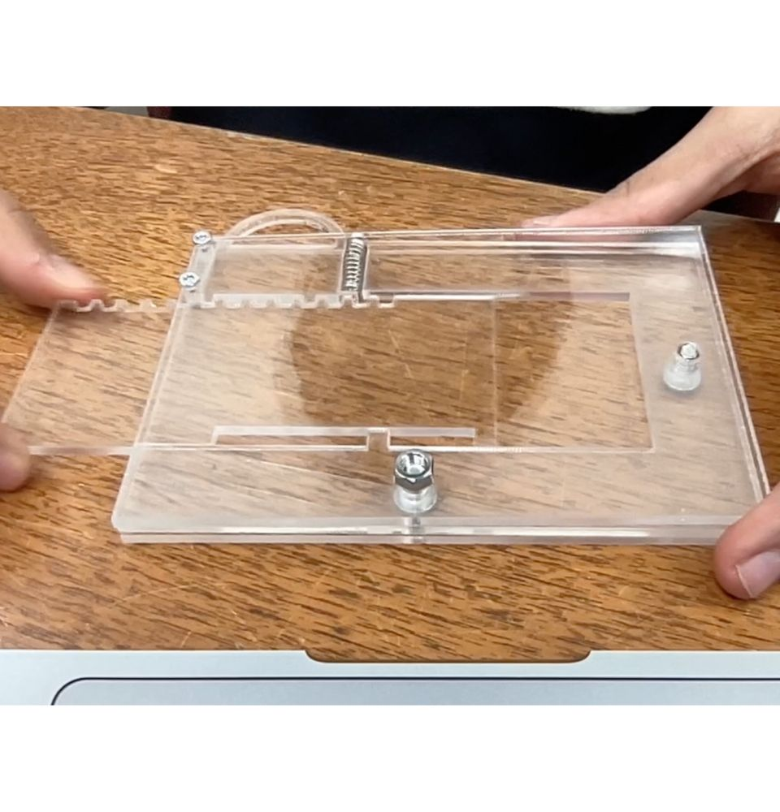
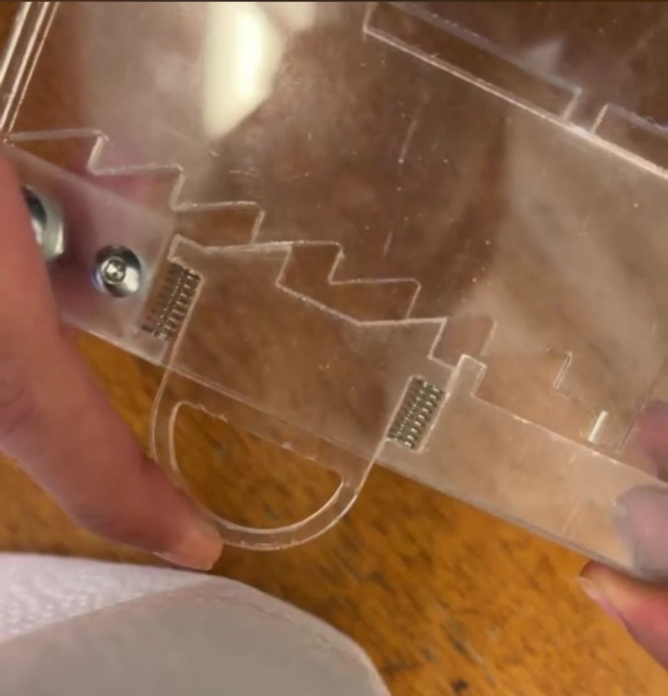
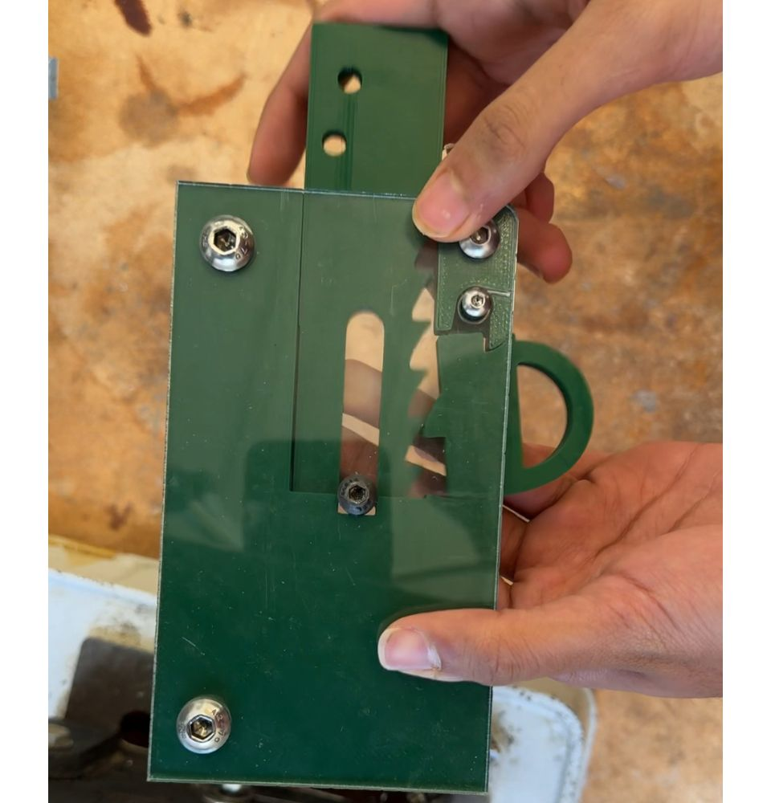
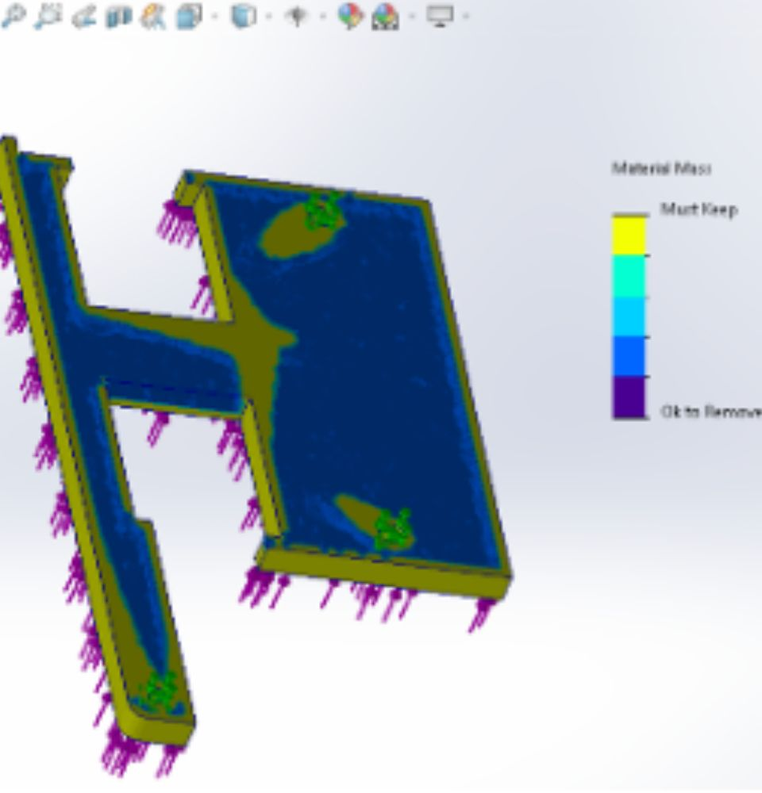
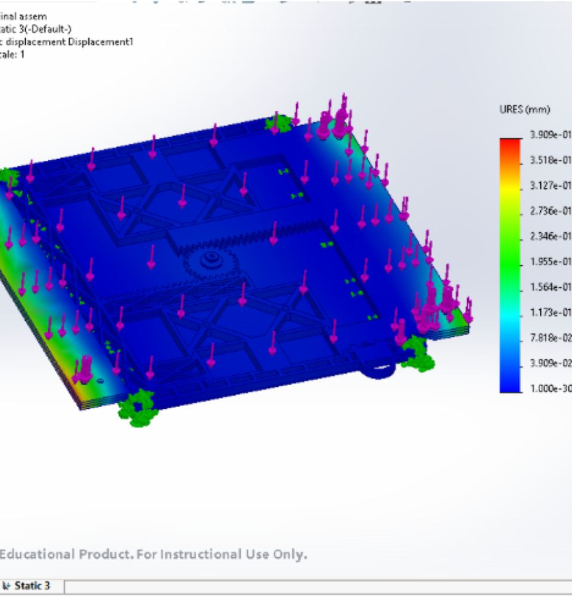

Overview
Human Dynamics and Control Lab
PI: Prof Elizabeth T. Hsiao-Wecksler, PhD
Mentor: Katherine O'Reilly, MS candidate
PURE (Personalized Unique Rolling Experience) is a novel wheelchair project focused on developing an innovative adjustable seat mechanism to improve accessibility and comfort for users. This project addresses the need for adaptable wheelchair designs that can accommodate users of different sizes and requirements through a single, adjustable platform.
Project Video
Goal
Design an adjustable seat mechanism with a width range of 12" to 20" for a novel wheelchair. This significant adjustment range allows the wheelchair to accommodate various body types and sizes, from pediatric to adult users, making it a versatile solution for healthcare facilities and individual users who may share equipment or whose needs change over time.
Key Contributions & Skills
- Mechanical Design: Designed rack & pinion and ratcheting system in SolidWorks, ensuring smooth and reliable adjustment mechanism
- Analysis & Optimization: Validated design using FEA and optimized for weight reduction while maintaining structural integrity
- Prototyping: Created functional prototype using acrylic materials for proof-of-concept and testing
- Documentation: Developed comprehensive BOM (Bill of Materials) for final fabrication, ensuring manufacturability and cost-effectiveness


Rapid Prototyping & Design Iterations
The development of the locking mechanism underwent multiple rapid prototyping iterations to achieve optimal functionality and user experience. This iterative design process was crucial for refining the mechanism's reliability and ease of use.
Design Evolution:
- Locking Mechanism Progression: Initially designed with a traditional pin-lock system, the mechanism evolved through testing to implement a more user-friendly ratcheting system that allows for smoother, incremental adjustments without requiring precise alignment
- Spring System Optimization: Transitioned from helical compression springs to torsion springs, which provided better force distribution, reduced assembly complexity, and improved long-term reliability under repeated cycling
- 3D Printing & Tolerancing: Utilized FDM and SLA 3D printing for rapid iteration of critical components, carefully calibrating tolerances (±0.005") to ensure smooth operation while accounting for material shrinkage and printer resolution limitations
- Material Testing: Conducted multiple iterations using PLA, ABS, and resin-based prototypes to evaluate wear resistance, dimensional stability, and mechanical properties before finalizing the acrylic prototype



Prototyping Insights:
Through the iterative process, several key improvements were implemented:
- Tolerance Optimization: Fine-tuned clearances between moving parts through multiple 3D printed iterations, achieving optimal fit with 0.15mm clearance for sliding components and 0.05mm for press-fit assemblies
- User Feedback Integration: Conducted user testing with each prototype iteration, incorporating feedback on adjustment force requirements, audible/tactile feedback for position confirmation, and single-handed operation capability
- Manufacturing Considerations: Each iteration considered manufacturability, moving from complex geometries requiring support structures to self-supporting designs optimized for both 3D printing and eventual CNC machining
FEA Analysis
Analysis Performed:
- Structural Validation: Validated designs using SolidWorks FEA simulation to ensure structural integrity under various loading conditions
- Safety Assurance: Ensured safety for target user weight (95th percentile male), providing a robust safety factor for maximum user protection
- Weight Optimization: Performed topology studies to optimize and reduce weight for Aluminum/UHMW parts
- Deflection Analysis: Verified minimal deflection under load, ensuring user comfort and mechanism reliability during operation


Relevance
This project showcases comprehensive mechanical design, CAD modeling, analysis, and prototyping process skills essential for modern mechanical engineering:
- Technical Skills: Demonstrates ability to use analysis tools to validate and optimize mechanical designs, crucial for developing safe and efficient products
- Design Thinking: Shows understanding of user-centered design principles by addressing real accessibility challenges in wheelchair design
- Project Management: Illustrates capability to manage a complete product development cycle from concept through prototyping to fabrication documentation
- Industry Relevance: Applies engineering skills to healthcare technology, a growing field requiring innovative solutions for improving quality of life